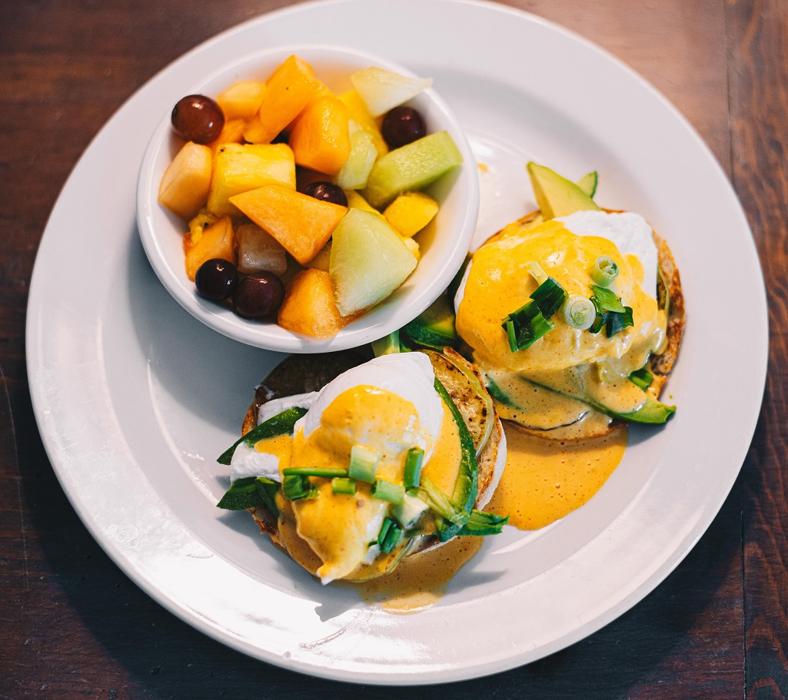
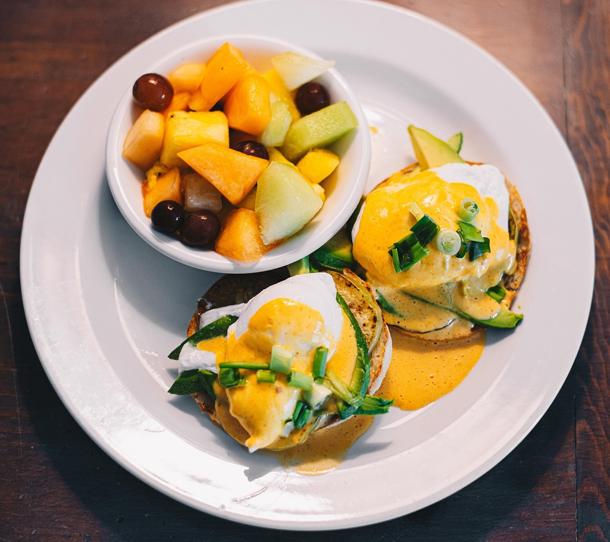
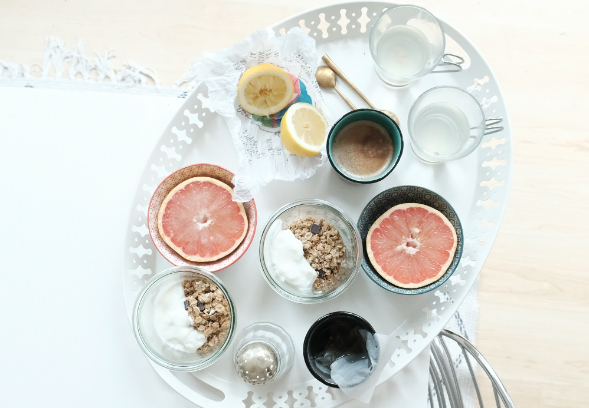
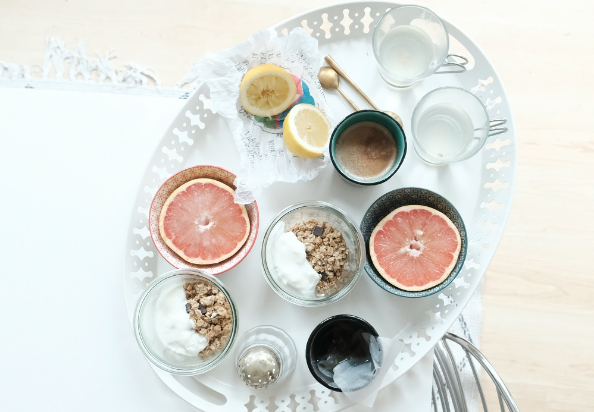
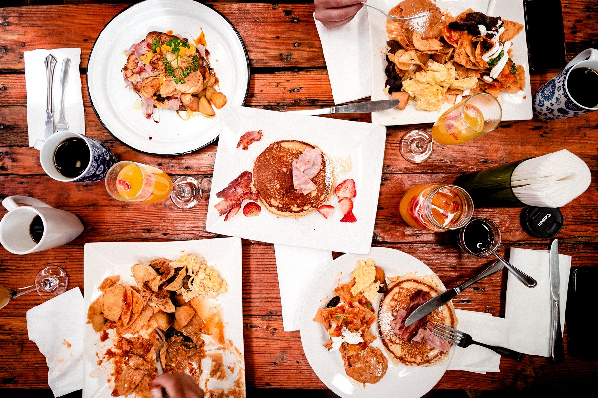
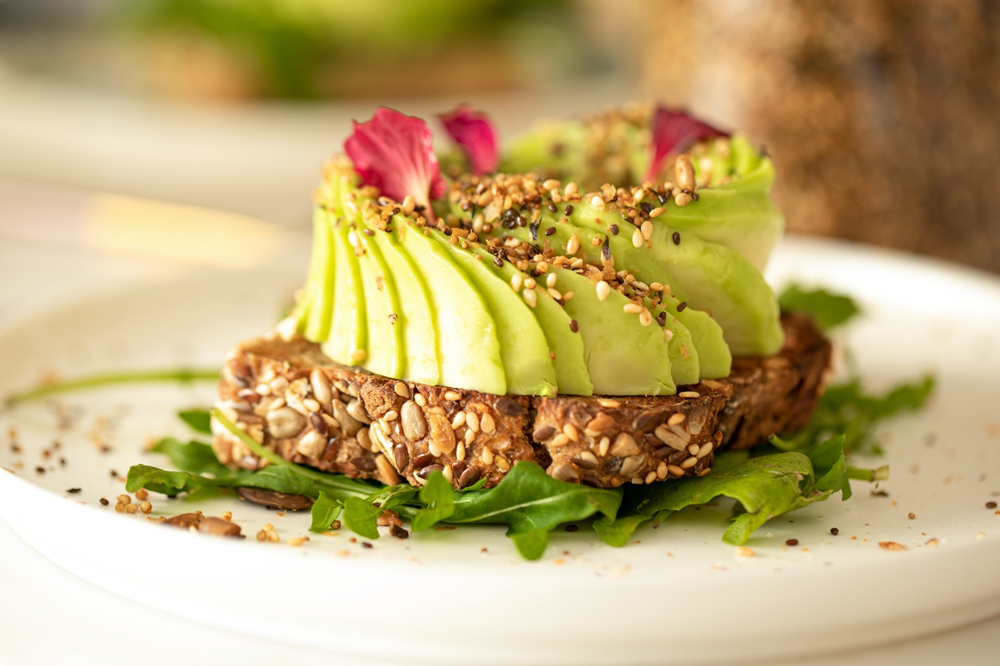
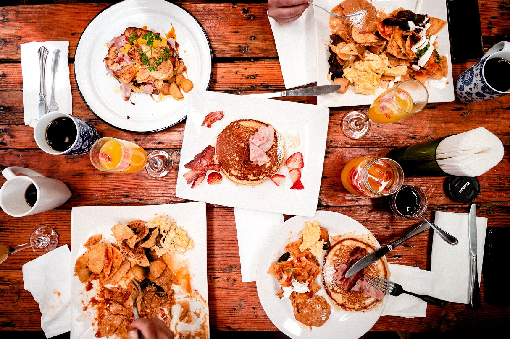
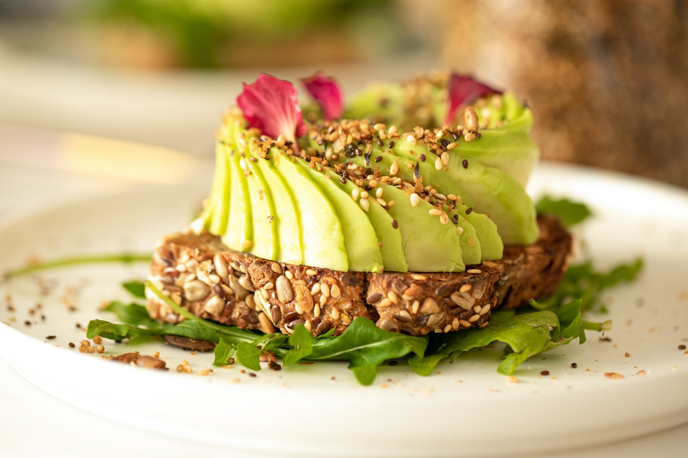

NUESTROS RECOMENDADOS
CAFE JUANCHO
Nace de dos amigos que decidieron volcarse al mundo del café. En esta cafetería de especialidad, su intención es que en la carta de acompañamientos, un tercio de las opciones no contenga ingredientes de origen animal, otro tercio sea sin gluten y el resto sí sea más tradicional, para que todos encuentren una opción viable y podamos convivir en armonía todos.
Sitio Web 


CAFE CARLO
Dentro de su top 3 están flat white con dos shots de café y se completa con leche; el latte se prepara con un shot de café y el resto se completa con leche; y el tercero, el expresso doble, contiene un par de shots de café, lo convierte en el ideal para disfrutar con un churro ya el contraste de amargor y dulce deleita el paladar.
Sitio Web 


CAFE AMORE
Sus tres opciones más destacadas de su carta son: el café unicornio; el espresso martini que es un doble espresso con vodka y licor de café y el “blonde coffee” que consiste en mezclar en la mesa una cerveza artesanal rubia con un doble espresso generando una birra estilo stout con notas a cacao y caramelo.
Sitio Web 



CAFE MARTINA
Acá se pueden consumir tres tipos de cafés: el “Ibaíri”, considerado el grano de café más pequeño del mundo, que es el resultado del cruzamiento entre dos grandes varietales, moka y bourbon rojo; el “Icatú Amarillo”, que es el fruto de muchos años de trabajos en laboratorio realizando varios retro-cruzamientos entre variedades tradicionales y el varietal “Laurina”, que posee muy bajo nivel de cafeína, por lo que se lo considera un café “naturalmente descafeinado”.
Sitio Web